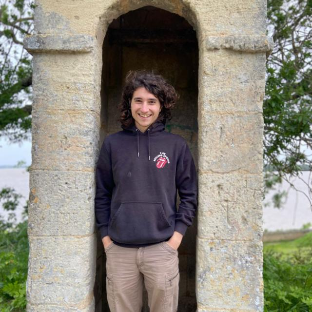

Jean Barré
jean.barre[at]ens.psl.eu
PhD candidate at:
École normale supérieure – PSL, LaTTiCe (CNRS & ENS-PSL), Paris



I am a fourth-year PhD candidate working with Thierry Poibeau and Thomas Conrad at École normale supérieure / PSL University in Paris.
My research falls within the field of computational literary studies, where we employ machine learning and NLP techniques on large, digitized text collections. The aim is to analyze literary history through a combination of close and distant reading approaches, exploring long-term literary trends while validating their textual authenticity.
Focusing on French narrative fiction from the late nineteenth to the first half of the twentieth century, I study the emergence and reconfiguration of novelistic subgenres such as detective and adventure fiction. Using large-scale corpora, vector-space representations, and network analysis, I model the evolution of textual structures and character archetypes (notably the figure of the detective) across time. The broader objective is to develop synchronic and diachronic models capable of capturing how literary forms persist, diverge, and evolve—thereby contributing to a quantitative literary history.
I graduated from a master's degree program in Digital Humanities with a specialization in CLS at École nationale des chartes in 2022.
Going to CHR2025 in Luxembourg (December 9–12).

Modeling the Birth of a Literary Archetype: The case of the Detective Figure in French Fiction
Barré, J. et al. (2025). Conference on Computational Humanities Research CHR2025, Esch-sur-Alzette, Luxembourg.
ArXiv,
PDF
Brottrager, J., Barré, J. et al.
Patterns of Canon: A Multilingual Network Study.
Conference on Computational Humanities Research CHR2025, Esch-sur-Alzette, Luxembourg.
Mélanie-Becquet, F., Barré, J. et al.
BookNLP-fr, the French Versant of BookNLP. A Tailored Pipeline for 19th and 20th Century French Literature.
Journal of Computational Literary Studies 3(1), 1–34.
10.48694/jcls.3924,
PDF
Barré, J. et al.
Operationalizing Canonicity: A Quantitative Study of French 19th and 20th Century Literature.
Journal of Cultural Analytics 8(1), 2023.
10.22148/001c.88113,
PDF
Gabay, F., Barré, J. et al.
The times are a-changin': présent vs passé simple in French novels (1811–2020).
Digital Humanities Benelux, June 2025, Amsterdam, Netherlands.
HAL,
PDF
Barré, J.
Latent Structures of Intertextuality in French Fiction.
Proceedings of the Conference Computational Humanities Research CHR2024, December 2024, Aarhus, Denmark.
CHR2024 Proceedings,
ArXiv,
PDF
Chen, Y., Barré, J. et al.
Network Analysis, Plot Theory: Revisiting French Literature through Character Networks.
DH2024, Washington, August 2024.
DH2024,
PDF
Barré, J. et al.
Détection automatique de l'architextualité dans le roman d'aventures. Une tentative d'opérationnalisation.
Humanistica 2024, Association francophone des humanités numériques, May 2024, Meknès, Morocco.
HAL,
PDF
Barré, J. et al.
Beyond Canonicity. Modeling Canon/Archive Literary Change in French Fiction.
Proceedings of the Conference Computational Humanities Research CHR2023, December 2023, Paris, France.
CHR Proceedings,
HAL,
PDF
Vianne, A., Barré, J. et al.
Gender Bias in French Literature.
Proceedings of the Conference Computational Humanities Research CHR2023, December 2023, Paris, France.
CHR Proceedings,
PDF
Barré, J. et al.
Pour une Détection Automatique de l’Espace Personnage dans les Romans.
Humanistica 2023, Association francophone des humanités numériques, June 2023, Geneva, Switzerland.
HAL,
PDF
Grunspan, T., Barré, J. et al.
Event Annotation for Literary Corpora Analysis.
DH2022, Tokyo, July 2022.
HAL,
PDF
2025 |
Modeling the Birth of a Literary Archetype: The case of the Detective Figure in French Fiction.
PDF
Culture Lab Kickoff, PSL, Paris, September 22, 2025.
2025 |
Modèles de Langues et Intertextualité dans le Roman Policier.
PDF
Colloque “Le texte de l'autre”, Paris, July 2025.
2025 |
Computational Analysis of the Birth of the Detective Novel.
PDF
Zentrum für Philologie und Digitalität, Würzburg University, June 2025.
2025 |
Latent Structures of Intertextuality in French Fiction.
PDF
The Embed-Days Colloquium, Paris, March 2025.
2025 |
Analyse Computationnelle de la Naissance du Roman Policier.
PDF
Séminaire Interprétations Artificielles, Université Paris-Nanterre, February 2025.
2024 |
Latent Structures of Intertextuality in French Fiction.
PDF
Computational Humanities Research Conference CHR2024, Aarhus, December 2024.
2024 |
BookNLP-fr, the French Versant of BookNLP.
PDF
Computational Literary Studies Conference, Darmstadt/Vienna, June 2024.
2024 |
La détection de Personnages dans la Littérature.
PDF
Journées Annuelles du réseau MATE, Lille, May 2024.
2024 |
Détection Automatique de l'Architextualité dans le Roman d'Aventures.
PDF
Humanistica 2024, Meknès, May 2024.
2023 |
Opérationnaliser la canonicité: Une étude quantitative dans la littérature française du 19e et 20e siècle.
PDF
Séminaire du Master Humanités Numériques de l'École des Chartes, Paris, December 2023.
2023 |
Beyond Canonicity: Modeling Canon/Archive Literary Change in French Fiction.
PDF
Computational Humanities Research Conference CHR2023, Paris, December 2023.
2023 |
Using LLMs & Fr-BookNLP to study subgenres: First experiments.
PDF
Pre-Conference Workshop CHR2023, Paris.
2023 |
Spécificités Stylistiques des Prix Littéraires.
PDF
Journée d'Étude “Identifier les régularités stylistiques dans le discours littéraire”, Paris, December 2023.
2023 |
Mesurer le Changement Littéraire.
PDF
Journée Doctorale du Lattice, Montrouge, June 2023.
2023 |
Pour une Détection Automatique de l’Espace Personnage dans les Romans.
PDF
Humanistica 2023, Geneva, June 2023.
2023 |
Operationalizing Canonicity. A Quantitative Study of French 19th and 20th Century Literature.
PDF
Stanford Literary Lab meetings, April 2023.
2023 |
What BookNLP does to Texts?
PDF
Workshop “Ce que le numérique fait aux humanités”, École Normale Supérieure, March 2023.
2022 |
Une Histoire Computationnelle du Genre dans la Fiction.
PDF
Séminaire du Lattice, November 2022.
2022 |
French BookNLP – Progress Report.
PDF
Presentation to David Bamman, UC Berkeley, September 2022.
2025 | Fall — F1TCB01, TD Récit et Argumentation, L1 Sorbonne Nouvelle, Licence de Lettres Modernes du LLFL.
2025 |
Fall — NLP for CLS, CPES-PSL, Bachelor Data Science, Arts and Cultures.
Course Website,
GitHub
2025 |
Fall — Python for Computational Humanities, École Nationale des Chartes, Master Humanités Numériques.
GitHub
2025 |
Spring — NLP for CLS, CPES-PSL, Bachelor Data Science, Arts and Cultures.
Course Website,
GitHub
2024 |
Fall — Python for Computational Humanities, École Nationale des Chartes, Master Humanités Numériques.
GitHub
2024 |
March — Le Genre des Personnages de Fiction, Introduction to Computational Literary Studies, École Normale Supérieure, Département Littérature et Langage.
PDF
2024 |
March — Classifier des Genres Littéraires, Introduction to Computational Literary Studies, École Normale Supérieure, Département Littérature et Langage.
PDF
2024 |
March — Using Large Language Models to Study Fiction, “Digital Humanities meet Artificial Intelligence” (PSL intensive week).
Link,
PDF,
GitHub
2024 |
February — LLMs pour la Recherche en Littérature, École Nationale des Chartes.
PDF
2023 |
Fall — Python for Computational Humanities, École Nationale des Chartes, Master Humanités Numériques.
GitHub
2023 |
October — Introduction to Computational Literary Studies, École Nationale des Chartes, Master Humanités Numériques.
PDF
2023 |
March — Introduction to NLP for DH, École Normale Supérieure (with Thierry Poibeau).
PDF
2022 |
November — A Computational Literary History of Gender in Fiction, DHAI – PSL intensive week.
Link,
PDF,
GitHub,
Students' Slides,
Report